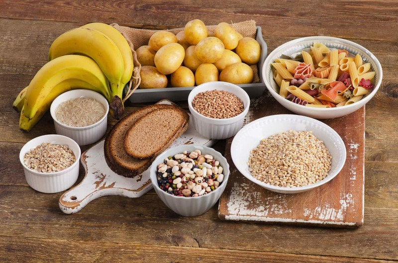

อาหารหมู่ที่ 2 คาร์โบไฮเดรต
อาหารหมู่ที่ 2 ประกอบไปด้วยข้าว น้ำตาล แป้ง มัน และเผือก เป็นต้น ซึ่งอาหารประเภทนี้จะให้สารอาหารประเภทคาร์โบไฮเดรตแก่ร่างกาย และนั่นก็คือการให้พลังงานแก่ร่างกายนั่นเอง มันจึงทำให้ร่างกายของคนเราสามารถทำงานได้อย่างเต็มที่ อีกทั้งยังให้ความอบอุ่นแก่ร่างกายอีกด้วย ในส่วนของพลังงานที่ได้รับจากการทานอาหารประเภทนี้โดยส่วนใหญ่จะหมดไปเป็นวันต่อวัน จากการทำกิจกรรมต่างๆ เช่น ทำงาน ออกกำลังกาย และเดิน เป็นต้น แต่หากคุณรับประทานอาหารประเภทนี้มากเกินความต้องการของร่างกายก็จะทำให้พลังงานถูกเปลี่ยนไปเป็นไขมัน จนทำให้เกิดโรคอ้วนตามมา
ประเภทของสารอาหารหมู่ที่ 2คาร์โบไฮเดรตที่ร่างกายได้รับจากการรับประทานอาหารประเภทนี้สามารถแบ่งออกเป็น 3 ประเภทด้วยกันคือ
1. โนโนแซ็กคาไรด์ คือ คาร์โบไฮเดรตที่มีขนาดของโมเลกุลเล็กที่สุด จะดูดซึมจากลำไส้ได้เลยเมื่อเข้าสู่ร่างกาย โดยที่ไม่ต้องผ่านการย่อยแต่อย่างใด
2. ไดแซ็กคาไรด์ คือ คาร์โบไฮเดรตที่มีส่วนประกอบของโมโนแซ็กคาไรด์จำนวน 2 ตัวมารวมกัน เมื่อร่างกายได้รับสารไดแซ็กคาไรด์ จะทำให้น้ำย่อยที่อยู่ในลำไส้เล็กย่อยออกมาเป็นโมโนแซ็กคาไรด์ก่อน ร่างกายจึงนำไปใช้ประโยชน์ได้
3. พอลีแซ็กคาไรด์ คือ คาร์โบไฮเดรตที่มีขนาดโมเลกุลใหญ่ที่สุด อีกทั้งยังมีสูตรโครงสร้างที่ซับซ้อน และประกอบไปด้วยโมโนแซ็กคาไรด์จำนวนมากมารวมกัน
ประโยชน์ของสารอาหารหมู่ที่ 21. มีความจำเป็นต่อการเผาผลาญไขมันในร่างกายให้เป็นไปตามปกติ
2. มีความสำคัญต่อการทำงานของสมอง
3. สงวนคุณค่าของโปรตีนไม่ให้เกิดการเผาผลาญเป็นพลังงาน หากร่างกายได้รับพลังงานจากคาร์โบไฮเดรตที่เพียงพอ
4. คาร์โบไฮเดรตเป็นสารอาหารที่ให้พลังงานไม่ต่ำกว่าร้อยละ 50 ของแคลอรีทั้งหมดที่ร่างกายได้รับแต่ละวัน
5. กรดกลูคูโรนิกซึ่งเป็นสารอนุพันธุ์ของกลูโคสนั้น จะคอยทำหน้าที่ในการเปลี่ยนสารพิษที่เข้าสู่ร่างกายเมื่อสารพิษเหล่านั้นผ่านไปที่ตับให้มีพิษลดลง อีกทั้งยังทำให้สารพิษอยู่ในสภาพที่ขับถ่ายออกมาได้
ถ้าร่างกายขาดคาร์โบไฮเดรดจะมีผลอย่างไร- ทำให้ร่างกายเหนื่อยล้า อ่อนเพลียง่าย และทำให้เกิดโรคได้ง่าย เพราะร่างกายไม่แข็งแรง
- ความจำไม่ดี หลงลืมง่าย
- อารมณ์แปรปรวนง่าย เพราะคาร์โบไฮเดรตเป็นสารอาหารสำคัญต่อการผลิตเซโรโทนิน ซึ่งเป็นสารเคมีที่ช่วยรักษาความสมดุลของอารมณ์ในร่างกาย
- ร่างกายขาดเส้นใยอาหาร มีปัญหาต่อการขับถ่าย